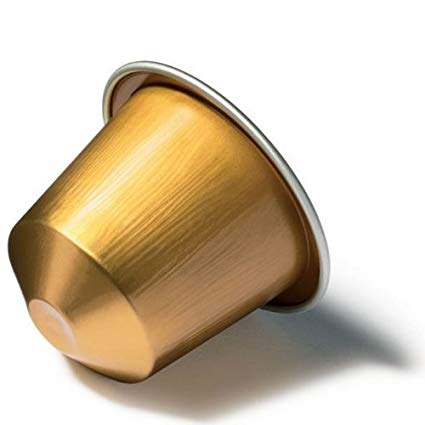
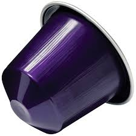
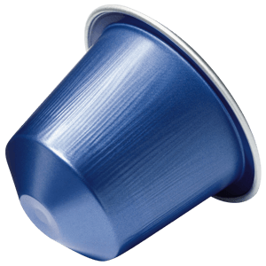
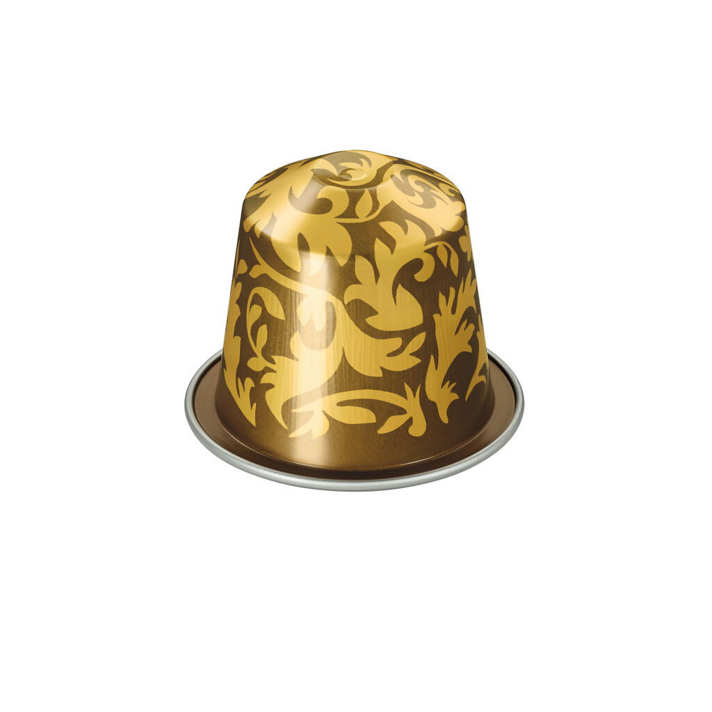
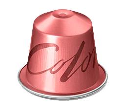
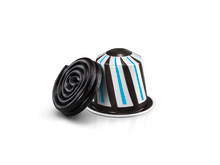
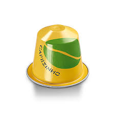

Volluto Decaffeinato
CAFÉ DULCE Y LIGERO
Deliciosamente dulce y suave, Volluto Decaffeinato tiene los mismos ricos sabores y cuerpo redondo que el café Volluto original. Las arábicas puras seleccionadas de América del Sur son tostadas ligera y separadamente para destacar sus notas específicas, frescas y frutadas. El perfil aromático de estos cafés se conserva cuidadosamente durante el proceso de descafeinización, que respeta la verdadera naturaleza del grano de café, permitiéndonos mantener la fuerza y riqueza de sus aromas.

Arpeggio Decaffeinato
CAFÉ INTENSO Y CREMOSO
Tueste oscuro y rico en sabor, Arpeggio Decaffeinato tiene el mismo carácter fuerte, cuerpo intenso y notas de cacao indulgentes como el café Arpeggio original. Una selección de las mejores arábicas de América Central y del Sur enriquece esta mezcla con notas intensas a cacao. Un tueste por separado revela las características de cada origen, cuidadosamente protegido durante el proceso de descafeinación, que respeta la verdadera naturaleza del grano de café, permitiéndonos mantener la fuerza y riqueza aromática de la mezcla.

Vivalto Lungo Decaffeinato
CAFÉ COMPLEJO Y BALANCEADO
Una mezcla compleja y equilibrada, Vivalto Lungo Decaffeinato tiene el mismo carácter rico que el original café Vivalto Lungo: tostado, ligeramente amaderado con cereales dulces y sutiles notas florales. Se trata de una mezcla de arábica pura de varios orígenes, incluyendo América del Sur y África Oriental. El perfil aromático de estos cafés se conserva cuidadosamente durante el proceso de descafeinización, que respeta la verdadera naturaleza del grano de café, permitiéndonos mantener la fuerza y riqueza de sus aromas.

Cortos
Spicy Intenso
CAFÉ EXCEPCIONALMENTE INTENSO Y ALMIBARADO
Una mezcla atrevida que incluye Robustas de Brasil y Guatemala, preparada especialmente para Nespresso, y una Arabica de América del Sur tostada separadamente, el Kazaar es un café de intensidad excepcional. Ese Ristretto de cuerpo completo es rico en notas tostadas. En copa se desarrolla un potente amargor y notas de pimienta que se equilibran por una textura densa y cremosa.

Scuro
PARA UN PODEROSO Y ENCORPADO ESPRESSO MACCHIATO
Basándonos en el estilo de los baristas de Melbourne –maestros en los sabores intensos, aunque perfectamente balanceados – elegimos variedades arábicas de cafés de Colombia y Etiopía y las tostamos por separado con un gran contraste para crear un sabor intenso de café tostado que combina a la perfección con la leche. Su perfil aromático es intenso tostado y armonioso.
Caramelito
CAFÉ CON AROMA A CARAMELO
Caramelito es un café elaborado sobre una base de café Livanto, una mezcla de arábicas de América del Sur y Centroamérica de caracter redondo y muy equilibrado. El sabor dulce del caramelo suaviza las notas tostadas. Este delicado blend evoca la cremosidad de un delicioso toffee

Largos
Vivalto Lungo
CAFÉ COMPLEJO Y BALANCEADO
Un complejo y equilibrado matrimonio entre arábicas sudamericanas cultivadas a gran altitud, entre las que destacan el "Cerrado" de Brasil y el Arabica de África Oriental. Vivalto Lungo combina notas florales tostadas y sutiles. El tueste separado de los granos realza el carácter de cada origen.

Linizio Lungo
CAFÉ REDONDO Y SUAVE
Con Arábica pura de América del Sur, Linizio Lungo es una mezcla bien redondeada de café brasileño y colombiano. El tueste por separado da una nota a malta y a cereal típica de la variedad Bourbon, manteniendo su carácter equilibrado y suave.
Fortissio Lungo
CAFÉ RICO Y ATERCIOPELADO
Al igual que en la edad de los barcos a vela, los granos de Arábica de Malabar de India están expuestos a los vientos del monzón después de la cosecha para revelar un distinguido perfil aromático. Combinamos estos con granos con Arabicas latinoamericanos para crear un Lungo con un carácter verdaderamente intenso. Este Lungo de cuerpo entero, rico en aroma, se expresa en hermosos cereales dulces y notas tostadas maltesas, y ofrece una agradable amargura con una exquisita plenitud en el paladar gracias a su textura redonda y suave.
